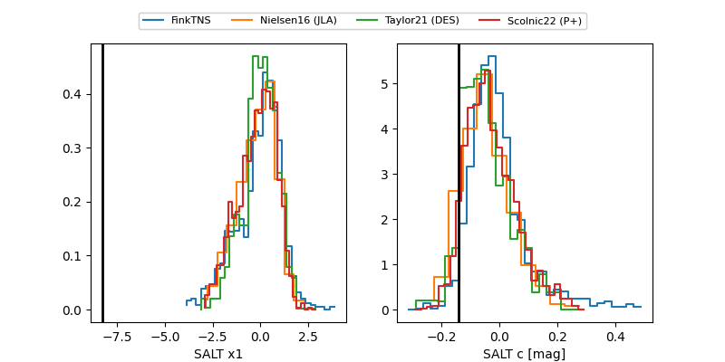

FINK: ZTF25abmtiec
Lasair: ZTF25abmtiec
ALeRCE: ZTF25abmtiec
TNS: 2025wfz
YSE: 2025wfz
ZTF25abmtiec (ztf,fink)
2025wfz (tns,yse)
ATLAS25ktd (atlas)
PS25hmk (panstarrs)
equatorial (ra, dec) = (350.0195,+16.28414)
galactic (l, b) = (93.2210,-41.25745)

last atlasc=19.32, atlaso=19.34, ztfg=20.17, ztfr=19.11
1 atlasc, 6 atlaso, 7 ztfg, 6 ztfr detections